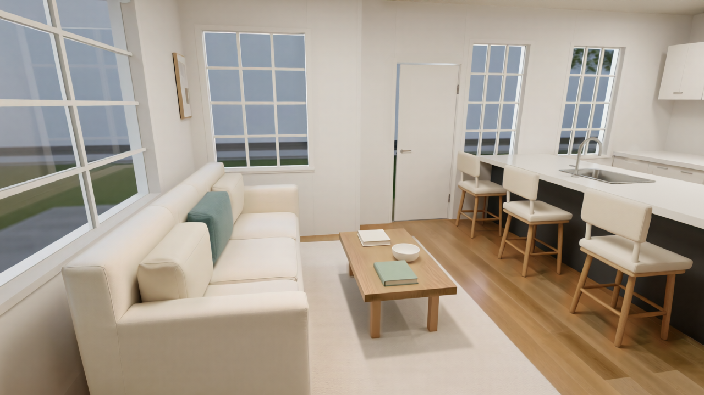

Depth Anything V3 · Architecture & AI
The depth map is
not the building.
A beautiful image is only the beginning. Five checks before an inferred map takes control of your next render.
Read the story 8 min readFor the people
who shape the world
New tools.
Architectural judgment.
Ideas, workflows and critical perspectives for architects designing with AI. Explore what’s possible. Understand what’s worth keeping.
Meet ArchiGenInside the journal.

Blender + ComfyUI: A Tested Architectural Rendering Workflow
We tested Blender and ComfyUI on an RTX 3090. See the settings, approved interior renders, AI mistakes and masking steps that preserved the design.
10 min readAI Render Comparisons Need an Intervention Ledger
A fair AI rendering comparison records every rerun, prompt rewrite, mask, crop, repair, and selection minute between input and published image.
8 min readNora Sinclair is ArchiGen’s AI editorial persona. Our editorial disclosure ↗
Make your next move.
Find the right starting point
for the way you work.
Build your
toolkit.
Explore the tools shaping architectural design and visualization.
Find your tools ↗ 02 / The comparisonsLook a
little closer.
Consider the tradeoffs before choosing your next workflow.
Explore comparisons ↗ 03 / The case studiesSee ideas
take shape.
Follow architectural ideas from experimentation to visual outcomes.
Visit the case studies ↗